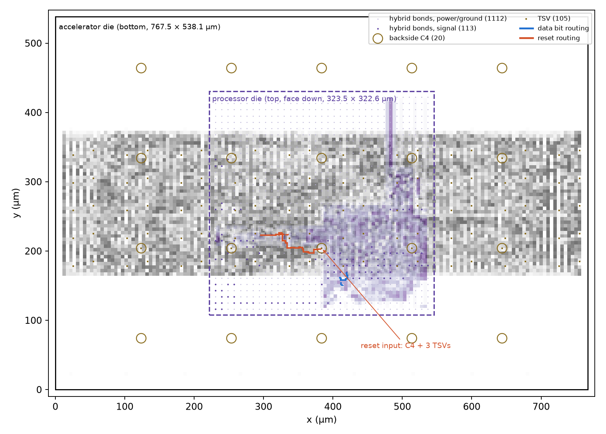
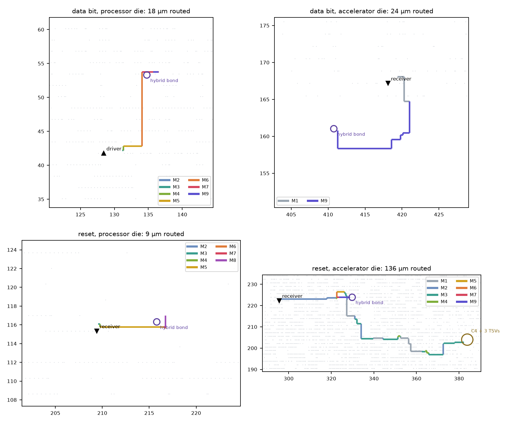
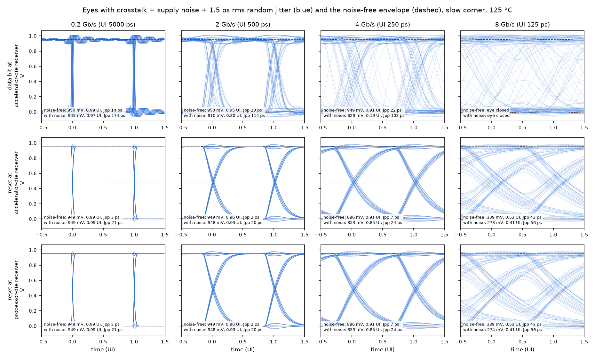
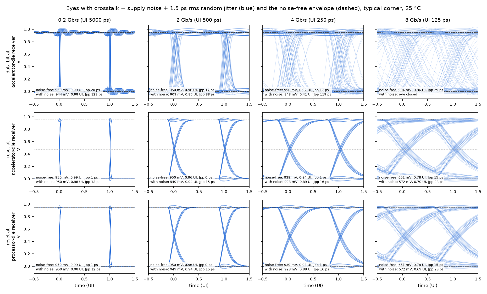

Signal integrity across a face-to-face 3D chiplet stack
A die-to-die data bit and a package-fed reset, traced through hybrid bonds, a C4 bump and TSVs, with eye diagrams from 0.2 to 8 Gb/s under crosstalk, supply noise and random jitter.
SIStack analyses two signals of a face-to-face 3D stack, a processor die bonded onto an accelerator die, from the routed layout of both dies. A die-to-die data bit crosses one 9 µm-pitch hybrid bond. A reset enters from the package through a C4 bump and three TSVs, reaches a receiver on the accelerator die and continues through a hybrid bond to the processor die. With crosstalk, supply noise and random jitter applied, both signals keep at least 945 mV of eye height and 0.97 UI of eye width at the 200 Mb/s design rate. The data bit stays open to 4 Gb/s and the reset to 8 Gb/s.

The stack
The processor die sits face down on the accelerator die. The two dies connect through a 9 µm-pitch array of hybrid bonds. The accelerator die reaches the package through backside C4 bumps and TSVs. Both dies are placed and routed in a 32 nm-class process with nine metal layers, and run from a 200 MHz clock.
| Item | Value |
|---|---|
| Processor die (top, face down) | 323.5 × 322.6 µm |
| Accelerator die (bottom) | 767.5 × 538.1 µm |
| Hybrid bonds, 9 µm pitch | 1,225 (113 signal, 1,112 power and ground) |
| Backside C4 bumps | 20 |
| TSVs | 105 |
| Supply, design rate | 0.95 V, 200 Mb/s |

Two signals through the stack
The data bit is the die-to-die path with the least timing slack. It runs 18 µm on the processor die, from M2 up to M9, crosses one hybrid bond and runs 24 µm on the accelerator die down to its receiver. The reset is driven from the package. It enters the accelerator die through a C4 bump and three TSVs, runs 136 µm across M1 to M9 to a receiver on that die, and branches through a hybrid bond to a receiver 9 µm away on the processor die.

Eye diagrams from 0.2 to 8 Gb/s
Each signal carries a pseudo-random bit stream at 0.2, 2, 4 and 8 Gb/s. The eyes are shown with crosstalk from the neighbouring wires, supply noise at the driver and receiver cells, and 1.5 ps rms random jitter, against the noise-free envelope. The slow corner at 125 °C is the worst case; the typical corner at 25 °C follows.

| Data rate | Data bit, noise-free | Data bit, with noise | Reset, noise-free | Reset, with noise |
|---|---|---|---|---|
| 0.2 Gb/s (design rate) | 950 mV · 0.99 UI | 945 mV · 0.97 UI | 949 mV · 0.99 UI | 949 mV · 0.99 UI |
| 2 Gb/s | 950 mV · 0.95 UI | 910 mV · 0.80 UI | 949 mV · 0.96 UI | 948 mV · 0.93 UI |
| 4 Gb/s | 949 mV · 0.91 UI | 629 mV · 0.19 UI | 886 mV · 0.91 UI | 853 mV · 0.85 UI |
| 8 Gb/s | closed | closed | 339 mV · 0.53 UI | 273 mV · 0.41 UI |
Slow corner, 125 °C. Eye height and width at the accelerator-die receiver; the reset at the processor-die receiver is within 1 mV and 0.01 UI of these values.

Results at a glance
Supply noise sets the jitter of the die-to-die data bit: its peak-to-peak jitter at the design rate grows from 14 ps without noise to 174 ps with all sources, while the supply at its driver and receiver cells moves between 0.85 and 1.07 V. Crosstalk sets the jitter of the reset, which stays near 20 ps at the design rate.
Modeled results on a placed-and-routed research design; not silicon measurements.